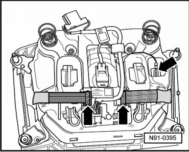
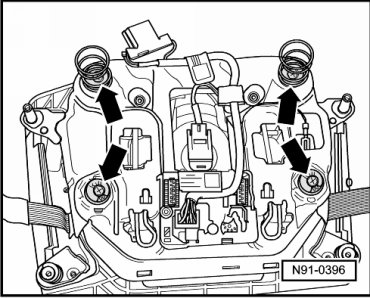
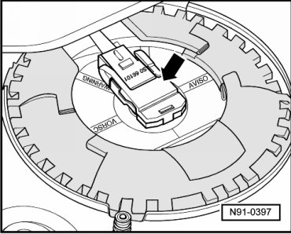
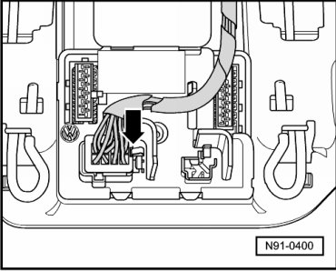
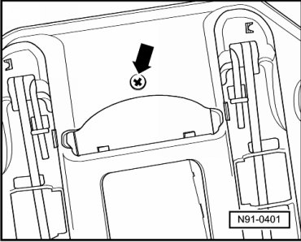

Steering Column Control Module: Service and Repair
Steering Column Electronic Systems Control Module
Before starting repair work, perform the following:
- Switch off ignition, switch off all electrical consumers and remove ignition key.
Removing
- Remove driver's side airbag unit.
• Position the uninstalled airbag unit so that it is not directly in your field of view.
• Before starting repair work on removed airbag unit, electrostatically discharge yourself. This is accomplished by, for example, touching grounded metal like water pipes, heating pipes or metal carriers.
- Remove driver's airbag attachment panel.
- Lay aside removed airbag unit on soft surface with top side facing down (this applies only to following repair work).
- Unlock and disconnect electrical connections - arrows -.

- Remove 4 mounting bolts from signal horn operation - arrows -.

- Before removing bracket for signal horn operation, disengage harness connector of airbag unit and disconnect - arrow -.

- Disengage harness connector - arrow - and disconnect it.

- Remove bolt on rear side of control module - arrow - and remove control module.

Installing
Install in reverse order of removal.
- Code Control unit for the steering column electronics, --> fit component parts Multifunction Steering Wheel. Refer to --> [ Multifunction Steering Wheel, Adapting Components ] Testing and Inspection.